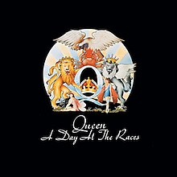

Trayectoria musical
Antes de formar Queen, May y Taylor habían tocado juntos en la banda Smile. Mercury se apegó a la banda y los animó a experimentar con técnicas escénicas y de grabación más elaboradas. Se unió en 1970 y sugirió el nombre de «Queen». Deacon fue reclutado en febrero de 1971, antes de que la banda lanzara su álbum debut homónimo en 1973. Queen apareció por primera vez en las listas de éxitos del Reino Unido con su segundo álbum, Queen II, en 1974. Sheer Heart Attack más tarde ese año y A Night at the Opera en 1975 trajeron a ellos el éxito internacional. Este último presentó «Bohemian Rhapsody», que se mantuvo en el número uno en el Reino Unido durante nueve semanas y ayudó a popularizar el formato de video musical.
Album más reconocido

- Tie Your Mother Down
- You Take My Breath Away
- Long Away
- The Millionaire Waltz
- You and I
- Somebody to Love
- White Man
- Good Old-Fashioned Lover Boy
- Drowse
- Teo Torriatte (Let Us Cling Together)